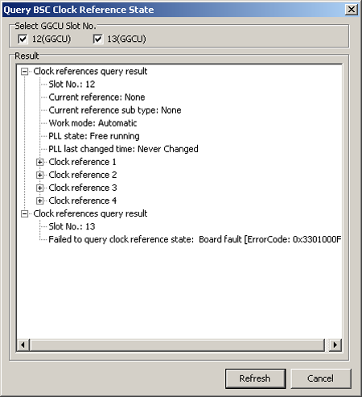

This describes how to query the status of the BSC clock
reference for the GGCU. Check whether the PLL status of the BSC clock
reference source is trace locked, check from which line clock the
clock is obtained, and check the time when the PLL locks the clock.
Prerequisites
- The LMT runs normally.
- The communication between the LMT and the BSC is normal.
- The GGCU is running properly.
Context
The GGCU is the clock board for the BSC system. After the
clock reference signals are transmitted to the GGCU, a line of clock
is selected in Manual or Automatic mode and converted to clock signals for the entire system after
the phase-locked tracing. The clock signals are then transmitted to
the GSCU in each subrack through the backplane or the panel.
Procedure
- Through GUI
- On the LMT, choose .
- Set parameters in the Select GGCU Slot No. area, and then click Refresh. The query results
are displayed, as shown in Figure 1.
Figure 1 Querying the clock reference status

- Click Cancel to end the query.
- Through MML
- Run the DSP CLKSTAT command on the Local Maintenance Terminal
to query the BSC clock reference status.
Postrequisite
Without the clock reference, the BSC can still run for
a period of time by using the free-run clock, but finally the BSC
stops working.
Copyright © Huawei Technologies Co., Ltd.